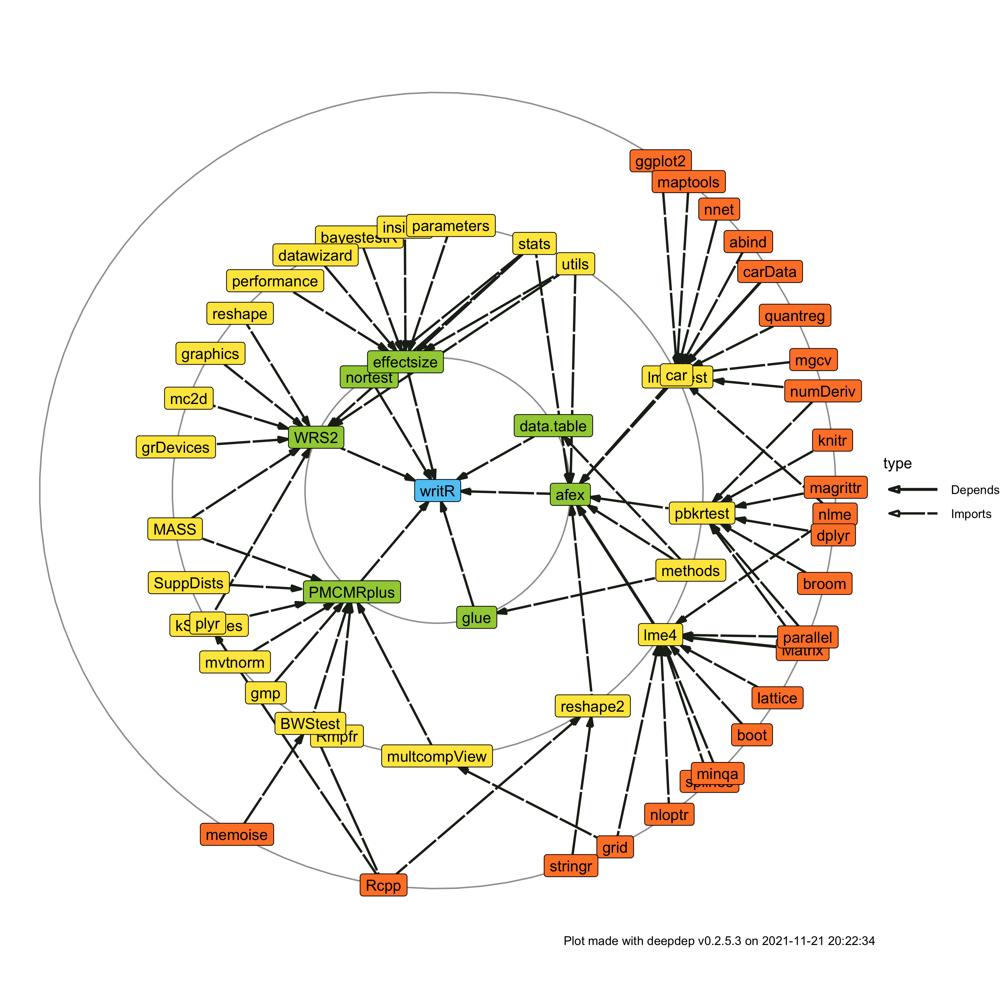

An R package for automated inferential testing (for group differences) and reporting based on parametric assumptions, which are tested automatically for test selection.
Installation
You can install the development version of writR from GitHub with:
# install.packages("devtools")
devtools::install_github("matcasti/writR")Summary of available tests using autest() function
For paired samples designs
| Nº of groups | Type | Test | Function in R
|
|---|---|---|---|
| 2 |
type = 'p': parametric. |
Student’s t-test. | stats::t.test |
| 2 |
type = 'r': robust. |
Yuen’s test for trimmed means. | WRS2::yuend |
| 2 |
type = 'np': non-parametric. |
Wilcoxon signed-rank test. | stats::wilcox.test |
| > 2 |
type = 'p': parametric. |
One-way repeated measures ANOVA (rmANOVA). | afex::aov_ez |
| > 2 |
type = 'p': parametric. |
rmANOVA with Greenhouse-Geisser correction. | afex::aov_ez |
| > 2 |
type = 'p': parametric. |
rmANOVA with Huynh-Feldt correction. | afex::aov_ez |
| > 2 |
type = 'r': robust. |
Heteroscedastic rmANOVA for trimmed means. | WRS2::rmanova |
| > 2 |
type = 'np': non-parametric. |
Friedman rank sum test. | stats::friedman.test |
For independent samples design
| Nº of groups | Type | Test | Function in R
|
|---|---|---|---|
| 2 |
type = 'p': parametric. |
Student’s t-test. | stats::t.test |
| 2 |
type = 'p': parametric. |
Welch’s t-test. | stats::t.test |
| 2 |
type = 'r': robust. |
Yuen’s test for trimmed means. | WRS2::yuen |
| 2 |
type = 'np': non-parametric. |
Mann-Whitney U test. | stats::wilcox.test |
| > 2 |
type = 'p': parametric. |
Fisher’s One-way ANOVA. | stats::oneway.test |
| > 2 |
type = 'p': parametric. |
Welch’s One-way ANOVA. | stats::oneway.test |
| > 2 |
type = 'np': non-parametric. |
Kruskal-Wallis one-way ANOVA. | stats::kruskal.test |
| > 2 |
type = 'r': robust. |
Heteroscedastic one-way ANOVA for trimmed means. | WRS2::t1way |
Corresponding Post-Hoc tests for Nº groups > 2
| Design | Type | Test | Function in R
|
|---|---|---|---|
| Paired |
type = 'p': parametric. |
Student’s t-test. | stats::pairwise.t.test |
| Paired |
type = 'np': non-parametric. |
Conover-Iman all-pairs comparison test. | PMCMRplus::durbinAllPairsTest |
| Paired |
type = 'r': robust. |
Yuen’s test for trimmed means (see Wilcox, 2012, p. 385). | WRS2::rmmcp |
| Independent |
type = 'p': parametric + var.equal = TRUE. |
Student’s t-test. | stats::pairwise.t.test |
| Independent |
type = 'p': parametric + var.equal = FALSE. |
Games-Howell test. | PMCMRplus::gamesHowellTest |
| Independent |
type = 'np': non-parametric. |
Dunn’s test. | PMCMRplus::kwAllPairsDunnTest |
| Independent |
type = 'r': robust. |
Yuen’s test for trimmed means (see Mair and Wilcox). | WRS2::lincon |
Available effect sizes
| Nº of groups | Test | Effect size |
|---|---|---|
| 2 | Parametric | Cohens’d |
| 2 | Parametric | Hedges’g |
| 2 | Non-parametric | Rank-biserial correlation |
| 2 | Robust | Algina-Keselman-Penfield robust standardized difference |
| > 2 | Parametric | Eta-squared |
| > 2 | Parametric | Omega-squared |
| > 2 | Non-parametric | Epsilon-squared |
| > 2 | Robust | Explanatory measure of effect size |
Automated testing
By default, k_sample(), checks automatically the assumptions of the data based on the parameters supplied for test selection.
library(writR) # Load the writR package
set.seed(123) # for reproducibility
diets <- data.frame(
weight = c(rnorm(n = 100/2, mean = 70, sd = 7) # Treatment
, rnorm(n = 100/2, mean = 66, sd = 7) ) # Control
, diet = gl(n = 2, k = 100/2, labels = c('Treatment', 'Control') ) )
result <- k_sample(
data = diets,
x = "diet", # independent variable
y = "weight", # dependent variable
type = NULL, # default, checks assumptions then choose appropiate test
)
print(result) # Detailed statistical results
#> y x statistic df df.error p.value method estimate
#> <char> <char> <num> <num> <num> <num> <char> <num>
#> 1: weight diet 6.292829 1 98 0.01376398 Fisher's ANOVA 0.05026771
#> conf.level conf.low conf.high effectsize n_obs
#> <num> <num> <num> <char> <int>
#> 1: 0.95 0.003432758 1 Omega-squared (partial) 100Inline results in APA style
The core function: k_sample() by default return a list of length 13 with detailed statistics, if inline results are desired, the lablr() function can be used.
An example using same data as before:
The analysis of the effects of the treatment, shows that experimental group had greater weight than control,
inline$full.
translates into this:
The analysis of the effects of the treatment, shows that experimental group had greater weight than control, F(1, 98) = 6.29, p 0.014, omega2 = 0.05, CI95 [0.00, 1.00].
It also let you perform centrality and dispersion statistics for inline results by using the cent_disp() function. The next example illustrates its usage:
data <- datasets::ToothGrowth
result <- with(data, tapply(
len, ## Variable to describe
list(supp, dose), ## Variables to aggregate on
cent_disp ## cent_disp() function
))
as.data.frame(result)
#> 0.5 1 2
#> OJ *M* = 13.2, *SD* = 4.5 *M* = 22.7, *SD* = 3.9 *M* = 26.1, *SD* = 2.7
#> VC *M* = 8, *SD* = 2.7 *M* = 16.8, *SD* = 2.5 *M* = 26.1, *SD* = 4.8The effect of vitamin C on tooth growth was explored in Guinea Pigs, were the group using orange juice (OJ) demonstrated similar values (
result['OJ','2']) than vitamin C (VC) group (result['VC','2']) in tooth length (TL) at 2 miligrams/day. However, at doses of 0.5 miligrams/day, the OJ group did show greater TL (result['OJ','0.5']) than VC group (result['VC','0.5']).
translates into this:
The effect of vitamin C on tooth growth was explored in Guinea Pigs, were the group using orange juice (OJ) demonstrated similar values (M = 26.1, SD = 2.7) than vitamin C (VC) group (M = 26.1, SD = 4.8) in tooth length (TL) at 2 miligrams/day. However, at doses of 0.5 miligrams/day, the OJ group did show greater TL (M = 13.2, SD = 4.5) than VC group (M = 8, SD = 2.7).
You can also set your own custom expressions using glue syntax like this:
cent_disp(
x = data$len,
str.a = "The median for length was {median} mm (MAD = {mad}, IQR = {IQR})",
k = 1 # For 1 decimal places
)
#> The median for length was 19.2 mm (MAD = 9, IQR = 12.2)It allows you to use any function available in your global environment or in attached packages, even custom functions:
Paired samples design
For paired designs you need to set paired = TRUE, and then, based on the numbers of groups detected after removing missing values, the test will run depending on the parameters stablished.
> 2 groups
When type = 'auto' the next assumptions will be checked for > 2 paired samples:
| Assumption checked | How is tested | If met | If not |
|---|---|---|---|
| Normality | stats::shapiro.test |
Sphericity check. | Friedman rank sum test |
| Sphericity | sphericity_check(model) |
One-way repeated measures ANOVA (rmANOVA) | Greenhouse-Geisser (GG) or Huynh-Feldt (HF) correction is applied |
n <- 40
set.seed(123)
cancer <- data.frame(
id = rep(seq_len(n), 3)
, cells = round(c(rnorm(n = n, mean = 100, sd = 15) # Basal
, rnorm(n = n, mean = 98, sd = 10) # Time-1
, rnorm(n = n, mean = 96, sd = 5) )) # Time-2
, period = gl(n = 3, k = n, labels = c('Basal', 'Time-1', 'Time-2') ) )
result <- k_sample(
data = cancer
, x = "period"
, y = "cells"
, rowid = "id"
, paired = TRUE
)
# Access the whole results
print(result)
#> y x statistic df df.error p.value method
#> <char> <char> <num> <num> <num> <num> <char>
#> 1: cells period 2.231395 1.77965 69.40635 0.1206689 Huynh-Feldt's rmANOVA
#> estimate conf.level conf.low conf.high effectsize n_obs
#> <num> <num> <num> <num> <char> <num>
#> 1: 0.01998957 0.95 0 1 Omega-squared (partial) 40
# For inline resutls or statistical reports
lablr(result)
#> stats p es ci
#> <char> <char> <char> <char>
#> 1: F(1.8, 69.4) = 2.23 p 0.121 omega2 = 0.02 CI95 [0.00, 1.00]
#> full
#> <char>
#> 1: F(1.8, 69.4) = 2.23, p 0.121, omega2 = 0.02, CI95 [0.00, 1.00]However, you can specify your own parameters for the selection of the test:
| Test | Parameters |
|---|---|
| One-way repeated measures ANOVA (rmANOVA) |
paired = TRUE + type = 'p' + sphericity = 'none'
|
| rmANOVA with Greenhouse-Geisser correction |
paired = TRUE + type = 'p' + sphericity = 'GG'
|
| rmANOVA with Huynh-Feldt correction |
paired = TRUE + type = 'p' + sphericity = 'HF'
|
| Heteroscedastic rmANOVA for trimmed means |
paired = TRUE + type = 'r'
|
| Friedman rank sum test |
paired = TRUE + type = 'np'
|
2 groups
Similar as before, if type = 'auto' assumptions will be checked for 2 paired samples:
| Assumption checked | How is tested | If met | If not |
|---|---|---|---|
| Normality | stats::shapiro.test |
Student’s t-test | Wilcoxon signed-rank test |
cancer_two <- cancer[cancer$period %in% c('Time-1','Time-2'),]
result <- k_sample(
data = cancer_two
, x = "period"
, y = "cells"
, paired = TRUE
)
# Access the whole results
print(result)
#> y x statistic df df.error p.value method estimate
#> <char> <char> <num> <num> <num> <num> <char> <num>
#> 1: cells period 1.196787 1 39 0.2806758 Fisher's rmANOVA 0.00267743
#> conf.level conf.low conf.high effectsize n_obs
#> <num> <num> <num> <char> <num>
#> 1: 0.95 0 1 Omega-squared (partial) 40
# For inline results
lablr(result)
#> stats p es ci
#> <char> <char> <char> <char>
#> 1: F(1, 39) = 1.20 p 0.281 omega2 = 0.00 CI95 [0.00, 1.00]
#> full
#> <char>
#> 1: F(1, 39) = 1.20, p 0.281, omega2 = 0.00, CI95 [0.00, 1.00]Same as above, you can specify your own parameters for the selection of the test:
| Test | Parameters |
|---|---|
| Student’s t-test for paired samples |
paired = TRUE + type = 'p'
|
| Wilcoxon signed-rank test |
paired = TRUE + type = 'np'
|
| Yuen’s test on trimmed means for dependent samples |
paired = TRUE + type = 'r'
|
Independent samples design
For independent samples you need to set paired = FALSE, and then, based on the numbers of groups detected, the test will run depending on the parameters stablished.
> 2 groups
When type = 'auto' the next assumptions will be checked for > 2 independent samples:
| Assumption checked | How is tested | If met | If not |
|---|---|---|---|
| Normality | stats::shapiro.test |
Homogeneity of variances check. | Kruskal-Wallis ANOVA |
| Homogeneity of variances | Levene’s test on medians with is_var.equal()
|
Fisher’s ANOVA | Welch’s ANOVA |
set.seed(123)
cancer_unpaired <- data.frame(
cells = round(c(rnorm(n = n, mean = 100, sd = 20) # Control
, rnorm(n = n, mean = 95, sd = 12) # Drug A
, rnorm(n = n, mean = 90, sd = 15) )) # Drug B
, group = gl(n = 3, k = n, labels = c('Control', 'Drug A', 'Drug B') ) )
result <- k_sample(
data = cancer_unpaired
, x = "group"
, y = "cells"
, paired = FALSE
, posthoc = TRUE
)
# Check results
print(result)
#> y x statistic df df.error p.value method estimate
#> <char> <char> <num> <num> <num> <num> <char> <num>
#> 1: cells group 4.861757 2 75.91708 0.01030964 Welch's ANOVA 0.08914428
#> conf.level conf.low conf.high effectsize n_obs
#> <num> <num> <num> <char> <int>
#> 1: 0.95 0.005281224 1 Omega-squared (partial) 120
# For inline results
lablr(result)
#> stats p es ci
#> <char> <char> <char> <char>
#> 1: F(2.0, 75.9) = 4.86 p 0.010 omega2 = 0.09 CI95 [0.01, 1.00]
#> full
#> <char>
#> 1: F(2.0, 75.9) = 4.86, p 0.010, omega2 = 0.09, CI95 [0.01, 1.00]However, you can specify your own parameters for the selection of the test:
| Test | Parameters |
|---|---|
| Fisher’s One-way ANOVA |
paired = FALSE + type = 'p' + var.equal = TRUE
|
| Welch’s One-way ANOVA |
paired = FALSE + type = 'p' + var.equal = FALSE
|
| Kruskal–Wallis one-way ANOVA |
paired = FALSE + type = 'np'
|
| Heteroscedastic one-way ANOVA for trimmed means |
paired = FALSE + type = 'r'
|
2 groups
Just like above, if type = 'auto' assumptions will be checked for 2 independent samples:
| Assumption checked | How is tested | If met | If not |
|---|---|---|---|
| Normality | stats::shapiro.test |
Homogeneity of variances check. | Mann-Whitney U test |
| Homogeneity of variances | Levene’s test on medians with is_var.equal()
|
Student’s t-test | Welch’s t-test |
result <- k_sample(
data = cancer_unpaired[cancer_unpaired$group %in% c('Drug A','Drug B'),]
, x = "group"
, y = "cells"
, var.equal = FALSE
)
# For tabular results
print(result)
#> y x statistic df df.error p.value method estimate
#> <char> <char> <num> <num> <num> <num> <char> <num>
#> 1: cells group 3.08189 1 78 0.08309445 Fisher's ANOVA 0.02536358
#> conf.level conf.low conf.high effectsize n_obs
#> <num> <num> <num> <char> <int>
#> 1: 0.95 0 1 Omega-squared (partial) 80
# For inline results (e.g. manuscript)
lablr(result)
#> stats p es ci
#> <char> <char> <char> <char>
#> 1: F(1, 78) = 3.08 p 0.083 omega2 = 0.03 CI95 [0.00, 1.00]
#> full
#> <char>
#> 1: F(1, 78) = 3.08, p 0.083, omega2 = 0.03, CI95 [0.00, 1.00]You can specify your own parameters for the selection of the test as well:
| Test | Parameters |
|---|---|
| Student’s t-test for independent samples |
paired = FALSE + type = 'p' + var.equal = TRUE
|
| Welch’s t-test for independent samples |
paired = FALSE + type = 'p' + var.equal = FALSE
|
| Mann–Whitney U test |
paired = FALSE + type = 'np'
|
| Yuen’s test on trimmed means |
paired = FALSE + type = 'r'
|
Mixed effects ANOVA
By using aov_r function is possible to get the statistical report of between/within-subject(s) factor(s) for factorial designs using afex package under the hood for statistical reporting. Let’s see an example
# set parameters to simulate data with a between and within subject factor
within <- 3
between <- 2
n <- 70
set.seed(123)
stroop <- data.frame(
subject = rep(1:n, within),
gender = gl(between, n/between, length = n*within, labels = c('Male','Female')),
time = gl(within, n, length = n*within),
score = rnorm(n*within, mean = 150, sd = 30))
# Manipulate data to generate interaction between Gender and Time
stroop <- within(stroop, {
score[gender == 'Male' & time == 1] <- score[gender == 'Male' & time == 1]*1
score[gender == 'Male' & time == 2] <- score[gender == 'Male' & time == 2]*1.15
score[gender == 'Male' & time == 3] <- score[gender == 'Male' & time == 3]*1.3
score[gender == 'Female' & time == 1] <- score[gender == 'Female' & time == 1]*1
score[gender == 'Female' & time == 2] <- score[gender == 'Female' & time == 2]*0.85
score[gender == 'Female' & time == 3] <- score[gender == 'Female' & time == 3]*0.7
})
result <- aov_r(
data = stroop
, response = "score"
, between = "gender"
, within = "time"
, rowid = "subject"
, effsize.type = 'omega' # omega squared as our measure of effect size
, sphericity = 'auto' # check if sphericity is not being violated
)
# Check results
print(result)
#> y x statistic df df.error p.value method
#> <char> <char> <num> <num> <num> <num> <char>
#> 1: score gender 130.7357382 1 68 1.720992e-17 Fisher's ANOVA
#> 2: score time 0.2367333 2 136 7.895263e-01 Fisher's rmANOVA
#> 3: score gender:time 42.8799011 2 136 3.635914e-15 Fisher's rmANOVA
#> estimate conf.level conf.low conf.high effectsize n_obs
#> <num> <num> <num> <num> <char> <int>
#> 1: 0.6495369 0.95 0.5389314 1 Omega2_partial 70
#> 2: 0.0000000 0.95 0.0000000 1 Omega2_partial 70
#> 3: 0.2893804 0.95 0.1844234 1 Omega2_partial 70
# And inline results for reporting purposes
inline <- result[j = lablr(.SD), keyby = x]
print(inline[,c("x", "full")])
#> Key: <x>
#> x full
#> <char> <char>
#> 1: gender F(1, 68) = 130.74, p 2e-17, omega2 = 0.65, CI95 [0.54, 1.00]
#> 2: gender:time F(2, 136) = 42.88, p 4e-15, omega2 = 0.29, CI95 [0.18, 1.00]
#> 3: time F(2, 136) = 0.24, p 0.790, omega2 = 0.00, CI95 [0.00, 1.00]For inline results with previous data we would do something like this:
In order to analyze the effect of gender on subjects’ scores in each of the evaluation periods, we performed an analysis of variance (ANOVA) with between- and within-subjects factors. From the analyses, we find that gender has a large effect (
inline["gender", paste(es, ci, sep = ", ")]) on scores when adjusting for each of the time periods,inline["gender", paste(stats, p, sep = ", ")]. In a similar way we find a significant interaction between evaluative time and gender (inline["gender:time", paste(stats, p, sep = ", ")]), indicating unequal responses between males and females over time,inline["gender:time", paste(es, ci, sep = ", ")], however, time alone is not able to explain statistically significantly the variance in scores,inline["time"]$full.
Which will translate into this after evaluation in R Markdown:
In order to analyze the effect of gender on subjects’ scores in each of the evaluation periods, we performed an analysis of variance (ANOVA) with between- and within-subjects factors. From the analyses, we find that gender has a large effect (omega2 = 0.65, CI95 [0.54, 1.00]) on scores when adjusting for each of the time periods, F(1, 68) = 130.74, p < 0.001. In a similar way we find a significant interaction between evaluative time and gender ( F(2, 136) = 42.88, p < 0.001 ), indicating unequal responses between males and females over time, omega2 = 0.29, CI95 [0.17, 0.40], however, time alone is not able to explain statistically significantly the variance in scores, F(2, 136) = 0.24, p = 0.79, omega2 = -0.01, CI95 [0.00, 0.00].
When you have more than 1 factor (between or within subjects) you have to specify them as a character vector: between = c('factor1', 'factor2' ...), and the same for within = c('factor1', 'factor2' ...).
Testing categorical data
To test purely categorical data, contingency() function is your guy.
Goodness-of-fit Chi-squared
By only filling the data, and x argument, the Goodness-of-fit chi-squared test (χ2gof)
result <- contingency(
data = cancer_unpaired[-(1:10),], # 3 groups: Control, Drug A, Drug B
x = "group"
)
# Tabular format dropping empty columns
print(result)
#> x statistic df p.value method
#> <char> <num> <num> <num> <char>
#> 1: group 1.818182 2 0.4028903 Chi-squared test for given probabilities
#> estimate conf.level conf.low conf.high effectsize
#> <num> <num> <num> <num> <char>
#> 1: 0.1275153 0.95 0 1 Pearson's C
# For inline results
inline <- lablr(result, markdown = T)And the inline result would look like this:
In preliminary analyses, we’ve seen that the proportion of pacients the same across groups,
inline$full.
translates into:
In preliminary analyses, we’ve seen that the proportion of pacients the same across groups, X2(2) = 0.00, p = 1, V = 0.00, CI95 [0.00, 0.00].
Pearson’s Chi-squared
By providing x and y arguments on contingency() you get Pearson’s Chi-squared test.
result <- contingency(
data = mtcars, # Using mtcars data
x = "cyl",
y = "gear"
)
# Statistics in tabular format
print(result)
#> y x statistic df p.value method
#> <char> <char> <num> <int> <num> <char>
#> 1: gear cyl 18.03636 4 0.001214066 Pearson's Chi-squared test
#> estimate conf.level conf.low conf.high effectsize
#> <num> <num> <num> <num> <char>
#> 1: 0.4819631 0.95 0.07050663 1 Cramer's V
# Inline results format
lablr(result)
#> stats p es ci
#> <char> <char> <char> <char>
#> 1: X2(4) = 18.04 p 0.001 V = 0.48 CI95 [0.07, 1.00]
#> full
#> <char>
#> 1: X2(4) = 18.04, p 0.001, V = 0.48, CI95 [0.07, 1.00]Fisher’s exact test
Otherwise, you could use Fisher’s exact test for count data if you specify exact = TRUE.
result <- contingency(
data = mtcars,
x = "cyl",
y = "gear",
exact = TRUE
)
# Statistics in tabular format
print(result)
#> y x statistic df p.value method
#> <char> <char> <num> <int> <num> <char>
#> 1: gear cyl 18.03636 4 0.001214066 Pearson's Chi-squared test
#> estimate conf.level conf.low conf.high effectsize
#> <num> <num> <num> <num> <char>
#> 1: 0.4819631 0.95 0.07050663 1 Cramer's V
# Inline results format
lablr(result)
#> stats p es ci
#> <char> <char> <char> <char>
#> 1: X2(4) = 18.04 p 0.001 V = 0.48 CI95 [0.07, 1.00]
#> full
#> <char>
#> 1: X2(4) = 18.04, p 0.001, V = 0.48, CI95 [0.07, 1.00]McNemar’s Chi-squared Test
If you have a paired design and are using only categorical variables, then McNemar’s Chi-squared Test for Count data is your test to go.
## Presidential Approval Ratings.
## Approval of the President's performance in office in two surveys,
## one month apart, for a random sample of 1600 voting-age Americans.
performance <- data.frame(
id = rep(1:1600, 2),
`1st survey` = c(rep("Approve", 944), rep("Disapprove", 656)),
`2nd survey` = c(rep("Approve", 794), rep("Disapprove", 150),
rep("Approve", 86), rep("Disapprove", 570)), check.names = F)
result <- contingency(
data = performance,
x = "1st survey",
y = "2nd survey",
paired = TRUE # Set TRUE for McNemar test
)
# Statistics in tabular format
print(result)
#> y x statistic df p.value
#> <char> <char> <num> <num> <num>
#> 1: 2nd survey 1st survey 34.71186 1 3.822946e-09
#> method estimate conf.level conf.low conf.high
#> <char> <num> <num> <num> <num>
#> 1: McNemar's Chi-squared test 0.1355932 0.95 0.09124332 0.1777538
#> effectsize
#> <char>
#> 1: Cohen's g
# Inline results
lablr(result)
#> stats p es ci
#> <char> <char> <char> <char>
#> 1: X2(1) = 34.71 p 4e-09 g = 0.14 CI95 [0.09, 0.18]
#> full
#> <char>
#> 1: X2(1) = 34.71, p 4e-09, g = 0.14, CI95 [0.09, 0.18]Dependencies
The package writR is standing on the shoulders of giants. writR depends on the following packages:
deepdep::plot_dependencies('writR', local = TRUE, depth = 3)
Acknowledgments
I would like to thank to developers of statsExpressions and ggstatsplot for being an inspiration for this package. Naturally this package is in its first steps, but I hope that future collaborative work can expand the potential of this package.
Citation
To cite package ‘writR’ in publications run the following code in your R console:
citation('writR')
#> To cite package 'writR' in publications use:
#>
#> Castillo Aguilar M (2021). _writR: Inferential statistics and
#> reporting in APA style_. R package version 1.0.1,
#> <https://github.com/matcasti/writR>.
#>
#> A BibTeX entry for LaTeX users is
#>
#> @Manual{,
#> title = {writR: Inferential statistics and reporting in APA style},
#> author = {Matías {Castillo Aguilar}},
#> year = {2021},
#> note = {R package version 1.0.1},
#> url = {https://github.com/matcasti/writR},
#> }